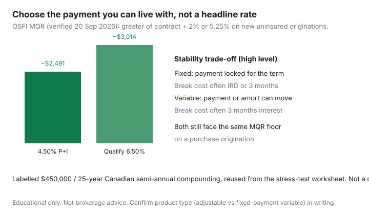

Housing · Canada
Fixed vs variable mortgages in Canada: choosing for shelter-cost stability
Households pick fixed or variable from a headline (“rates are falling / rising”) and then live with a payment that does not match their sleep. The useful question is shelter-cost stability: which product keeps the mortgage line predictable enough that groceries and the property-tax instalment still fit? The rate call is a licensed professional’s job. The budget call is yours.
On a new uninsured origination, OSFI’s public minimum qualifying rate remains the greater of the contract rate plus 2% or 5.25% (OSFI MQR page, verified 20 Sep 2026). You shop the contract payment. You qualify at the higher one. That gap is the stress-test worksheet, not a reason to ignore payment risk after you move in.
Disclosure: Mortgage rate tools are an offer type. Saving Optimizer may earn a commission if we later add partner links. We do not currently claim lender or broker partnerships. This is comparison education, not brokerage, credit, or legal advice.
Key takeaways
- Fixed: payment locked for the term. Variable: payment or amortisation can move when prime moves — confirm the product type in writing.
- Break-cost pattern (not a promise): variable often 3 months’ interest; fixed often greater of 3 months or IRD.
- OSFI MQR for new uninsured files: greater of contract + 2% or 5.25%. Both products still face it on a purchase.
- Dual stable paycheques, variable income, and near-retirement households do not want the same volatility.
- This is a checklist, not a rate forecast. Revisit at each renewal.
Payment stability vs rate-risk trade-off
A five-year fixed sets the principal-and-interest number for the term. That is the feature people mean by “I just want to know the bill.” A variable (or adjustable) product is usually priced off prime. Some Canadian variables change the payment when prime changes. Some keep the payment and change the interest/principal split — which can stretch amortisation if rates rise. Those are different sleep experiences. Ask which one is on the commitment letter.
Labelled sketch, reused from the stress-test page: $450,000, 25 years, Canadian semi-annual compounding. A 4.50% contract payment is about $2,491. The 6.50% qualifying payment is about $3,014. The $523 gap is underwriting, not your variable-payment ceiling after funding. After funding, a variable can still move the contract payment if that is how the product is built.

How break penalties differ at a high level
If you sell, refinance, or restructure before maturity, lenders charge a prepayment penalty. Public consumer explainers and lender pages usually describe:
- Variable: often three months’ interest on the outstanding balance.
- Fixed: often the greater of three months’ interest or an interest-rate differential (IRD) that compares your rate to a current posted or comparison rate the lender defines.
IRD is where “we’ll just break it” dies. A deep discount off a high posted rate can make IRD painful. Portability, blend-and-extend, and open products change the story. Read the charge. Get a written penalty quote before you list the house. This paragraph is a map, not your lender’s formula.
Stress-test and qualification interactions
The MQR does not pick fixed or variable for you. It asks whether the file survives a higher payment. A 3.80% variable is still underwritten at 5.80% (contract + 2%), which is above the 5.25% floor. A 3.10% special is still underwritten at 5.25%. A 4.90% five-year fixed is underwritten at 6.90%. The product that “qualifies more house” on a given Tuesday is a math result, not a personality test. Credit unions and some provincially regulated lenders can look different — get it in writing. Uninsured straight switches at renewal are a different OSFI story (21 Nov 2024); a purchase is an origination.
Household scenarios: dual income, variable income, near retirement
| Household | What usually breaks first | Stability question |
|---|---|---|
| Two salaried jobs, emergency fund | Boredom with a “higher” fixed | Can you fund a +$250 variable step without cutting the tax instalment? |
| Commission / contract income | A prime jump in a thin month | Is the mortgage allowed to move when invoices slip? |
| One income, kids, tight TDS | Any payment surprise | Fixed may be the cheaper sleep even if the rate is not the banner. |
| 5–10 years from retirement | A renewal into a smaller pension | Shorter remaining amort + payment certainty often beat a teaser. |
Hybrid and shorter-term options overview
Some lenders split the loan (part fixed, part variable). Some households use a three-year or two-year fixed to shorten the wait to the next shop. Shorter terms can mean more frequent renewal work — use the 120-day calendar — and can change both the contract payment and the +2% qualify rate. Hybrids do not remove IRD on the fixed slice. Open or convertible products cost more and exist for people who know they will sell. None of these is a blog dare; they are menu items to ask about.
What to revisit at each renewal
- Written offer from the current lender first.
- Whether you are still an uninsured straight-switch candidate (no extra money, no extra amort, FRFI to FRFI).
- Whether last term’s product still matches income stability.
- Penalty to break early if you might sell in year two of the next term.
- Prepayment privileges you actually use (lump sum, accelerated weekly).
Shop the channel as well as the product — broker vs bank vs credit union.
Decision checklist—not a rate call
- Write the payment you can make if prime is 1% higher and if it is 1% lower. If only one of those sentences is survivable, you have your answer.
- Write the break penalty type in one line from the commitment.
- Write the qualifying rate on the approval letter next to the contract rate.
- Do not use a podcast forecast as a household budget.
Year-one cash (land transfer tax, a dead fridge) still sits beside this choice — see first-year ownership costs.
Sources & date stamps
- OSFI, Minimum qualifying rate for uninsured mortgages — greater of contract + 2% or 5.25% (verified 20 Sep 2026).
- OSFI, uninsured straight-switch MQR change — 21 Nov 2024 (renewals, not purchases).
- Saving Optimizer stress-test worksheet — $450,000 / 25-year labelled payments (~$2,491 vs ~$3,014).
- Lender and FCAC-style consumer pages — IRD vs three-month interest as a high-level pattern (confirm your charge).
Frequently asked questions
Does the stress test treat fixed and variable differently?
On a new uninsured origination, OSFI’s public MQR is the greater of the contract rate plus 2% or 5.25% (verified 20 Sep 2026). A cheaper variable contract can still sit on the 5.25% floor; a higher fixed contract is tested at contract + 2% if that is larger. Insured files use a similar public shape — confirm with the insurer and lender. This is not a reason to pick a product from a blog.
Which break penalty is usually cheaper?
Industry pattern, not a promise: many variable products use three months’ interest; many fixed products use the greater of three months’ interest or an interest-rate differential (IRD). IRD can be large when posted rates and your discount interact. Read your charge and the lender’s penalty page before you assume you can “just break it.”
Is variable always a lower rate?
Often the advertised variable looks cheaper than the five-year fixed on the same day. That is not a forecast. Prime can move. Some products change the payment; some keep the payment and change how much is interest. Confirm which one you are being offered in writing.
Should I pick based on where the Bank of Canada is going?
No. This page will not call the overnight rate. Pick the payment path your household can sleep through, then revisit at renewal with the 120-day calendar.
Is this brokerage advice?
No. Comparison education only. Confirm OSFI, insurer, and lender rules for your file.